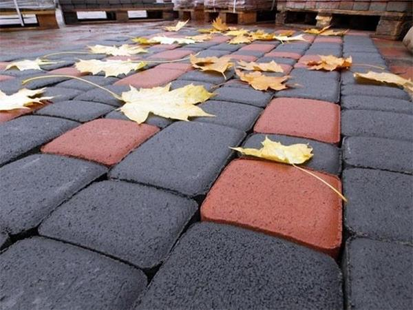

Сухопрессованная тротуарная плитка
В наши дни рынок тротуарной плитки представляет собой богатый выбор самой разнообразной продукции. Одной из самых практичных и не дорогих продукций данного сегмента является - сухопрессованная тротуарная плитка.При изготовлении нашей продукции, используются современные технологии и качественные материалы, что смело может гарантировать ее практичность долговечность. У нас используется большое количество различных пресс-форм (матриц), которые имеют разные размеры и геометрию. Тем самым у вас не возникнет сложности подобрать сухопрессованную плитку по своему стилю. Технология производства изделия заключается в том, что жесткая бетонная смесь засыпается с специальные контейнеры (пресс-формы, матрицы), затем она подвергается сильной вибрации, после сдавливается сверху подходящей формы матрицей. На сдавливающей пресс-форме нанесен соответственный рельеф, который отображается на готовом изделии. Последний этап — это разопалубка: матрицы поднимаются вверх, а готовая сухопрессованная тротуарная плитка остается на поддоне. Если сравнить, например, такие материалы как асфальт, песчаник и брусчатку, то сухопрессованная тротуарная плитка имеет большое количество преимуществ, таких как: Широкий выбор форм и цветов плитки. Уникальность рисунка благодаря игре цветовой гамме и форме. Удобство демонтажа на случай каких-либо работ на месте укладки. Используются экологически чистые материалы. Стойкость к перепадам температур. Доступная цена, при отличном качестве. Прочность – выдерживает большие нагрузки. Основные характеристики сухопрессованной тротуарной плитки: Смесь, из которой делается продукция имеет низкое водоцементное соотношение, это означает, что плитка устойчива к морозам и имеет высокую прочность. Изготовленные изделия имеют ровную геометрическую форму. Благодаря современным технологиям и материалам, изделие не теряет свой цвет на протяжении всего гарантийного срока службы, а это не менее 25 лет. Шершавость поверхности важное свойство, что создает дополнительные удобства - делает тротуарную плитку не скользкой. Купить сухопрессованную тротуарную плитку вы можете от производителя. Наши специалисты с радостью проконсультируют и помогут сделать правильный выбор. Цены на изделия вас приятно удивят. А специалисты по укладке, грамотно и в срок выполнят необходимую работу, от которой вы гарантировано останетесь довольны на долгие годы.
НАЗАД